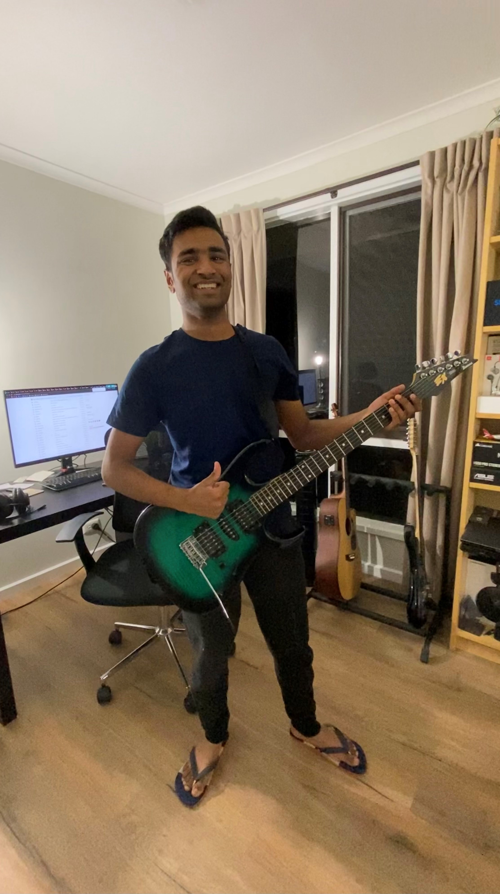
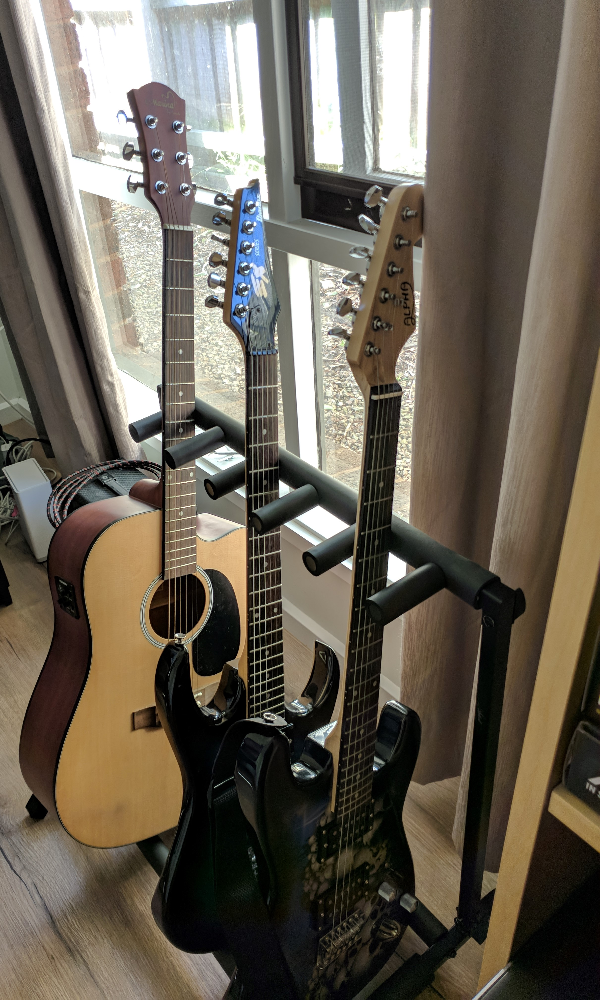
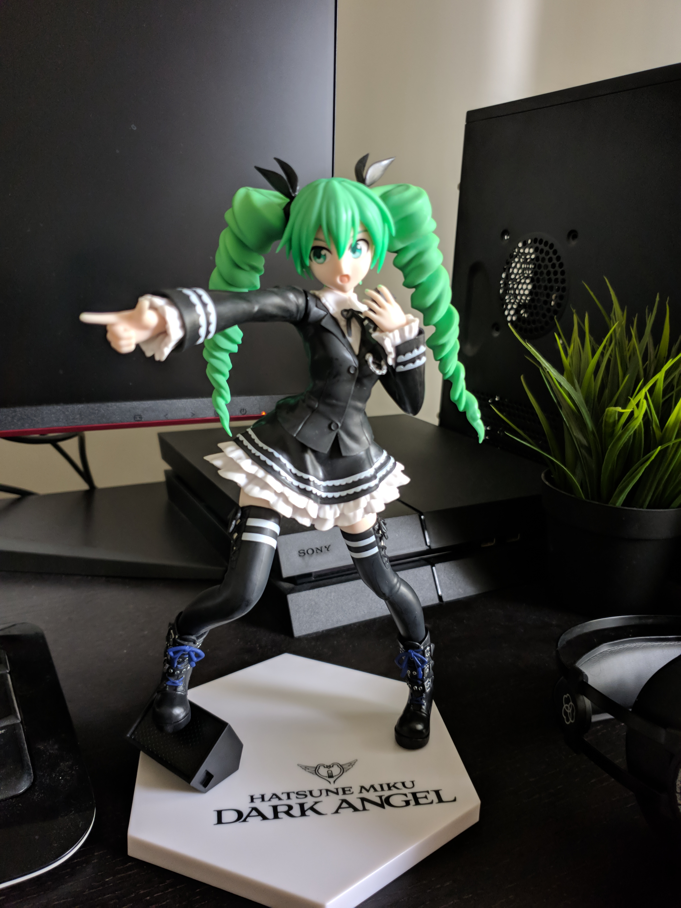
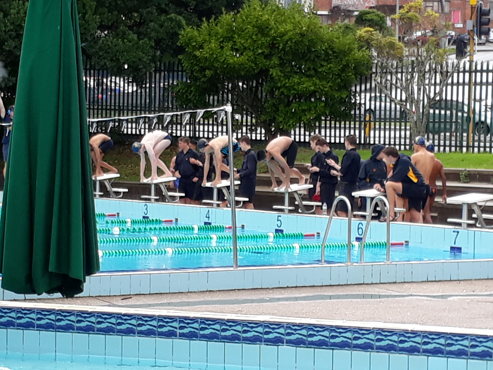

Overview
Abel John (S3953018) | Born in India, raised in New Zealand. My name is Abel and I come from the south-east side of Melbourne. I have experience in Python, especially Python Tkinter, Arduinos, Raspberry Pi, HTML, CSS and have tried out the basics of PHP and JavaScript. I’m interested in mobile application development as well as Android development, one of my hobbies was to customize and modify older devices with custom ROMS and other performance and visual mods. Other hobbies are watching anime, reading tech news from XDA and GSMArena, watching tech and metal related videos on YouTube, listening to metal, playing my guitar from time to time and spending hours on the internet. I form the 'A’ initial of team RHAMJET Link to personal page

ISTJ-T/High Conscientiousness and Agreeable Big Five/Pragmatic & Reflective Learner
ISTJ indicates an introverted nature, with the self-motivation to work well without the need to be micromanaged. As a highly conscientious, structured planner, Abel is well suited to directing and maintaining the workflow of our team. A high agreeable score means he is also likely able to manage this without upsetting fellow team members. As a dual reflector/theorist learner, Abel learns best with time to digest information.
More about me
Music Interest
 My preferred choice of music is metal, more specifically metalcore. The passion for metal started when I was playing Need for Speed Most Wanted (2005) and the songs Hand of Blood by Bullet for my Valentine and Blinded in Chains by Avenged Sevenfold played in the background. I have always been fascinated by the creativity and how broad metal is as a whole. From breakdowns to clean harmonies, fast solos and melodic leads I find metal very relaxing despite the aggressive vocals and distorted guitar tones. A guitarist I look up to is Youtuber Nik Nocturnal, I like how he can cover whole albums within a few hours after release and his sense of humour. I play guitar myself as a hobby whenever I get time and I like to play along to these songs. My primary guitar is a second hand Ibanez EX 170 (the one I'm holding), I also have an Alpha strat (Fender Stratocaster clone) which I got for free and a Marina acoustic guitar.
Other Hobbies, but in detail
 I also have an interest in anime as seen by the Miku figure. One of my favourite series is the Grisaia trilogy, I enjoy rich character development and the story as a whole.
Back in the day I used to swim, sometimes competitive for fun but most of the time it was just for my personal training and enjoyment. My favourite stroke is breaststroke as I get better race results with it, I also find it a lot more relaxing in comparison to the other stokes. My least favourite would be either butterfly or freestyle, butterfly being that it literally wipes me out after 100m and freestyle being that everyone in my lane is faster than me. Someday I want to get back into swimming as it is a good skill to have and also a good workout.